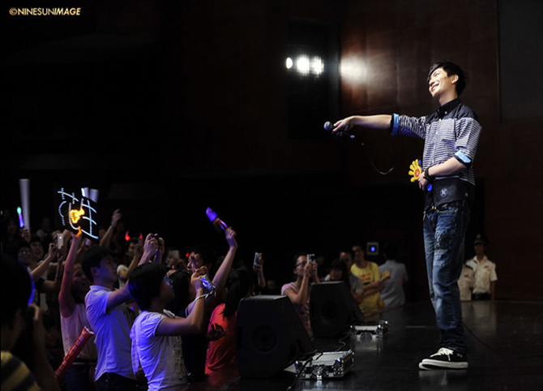
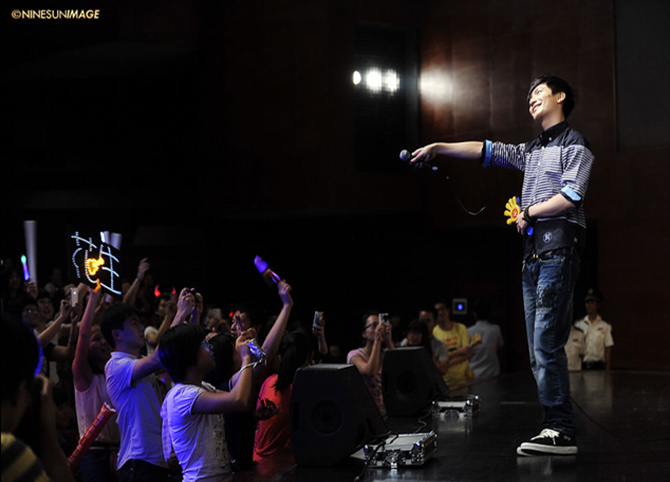

“民谣在路上”全国巡回海口站2012-09-16
SIMULRADIO FM91.6音乐电台七周年庆典
"民谣在路上" 全国巡回演唱会海口站 2012年9月16日晚上8点，FM91.6 SIMULRADIO音乐电台七周年庆典暨“民谣在路上”全国巡回演唱会海口站，在海南省歌舞剧院隆重上演，1100多名现场观众和陈楚生、川子、马条、王梵瑞、杨嘉松、钟立风一起高歌众多脍炙人口、广为流传的经典音乐作品，一起重温了校园的民谣时代，一同感悟民谣的创造力和生命力。本次演唱会由FM91.6 SIMULRADIO音乐电台与十三月唱片共同主办，红牛维他命饮料有限公司全程赞助。 FM91.6 SIMULRADIO音乐电台用华丽的舞台、震撼的音乐为歌迷带来了一场音乐饕餮盛宴，与现场的嘉宾与观众一起感受了一场充满回味的音乐会。
原本以为民谣，就是一个歌手抱着一把吉他，静静地唱着或悠远、或悲伤歌曲，但“民谣在路上”的演出，却打破了这个概念。演出现场，观众可以集体跟着旋律一起舞动；可以和歌手一起放声的歌唱。中场，FM91.6 SIMULRADIO音乐电台的主持群也为晚会带来了自编自唱的《音乐故事》让在场的歌迷，也能领略到电台主持人的风采。
最后陈楚生压轴登场，观众的情绪被撩拨到最高点，所有人都站起来了，跟着陈楚生一起高唱《有没有人曾告诉我》等一系列脍炙人口的经典歌曲，很多观众感言这些歌曲，让他们想起了曾经的青春、流下了感动的眼泪。
演出结束后，许多观众还不愿离开，都还深深沉浸在音乐带给自己的回味当中。至此，FM91.6 SIMULRADIO音乐电台七周年庆典暨“民谣在路上”全国巡演海口站演唱会已经画上了完美的句号。
"民谣在路上" 全国巡回演唱会海口站 2012年9月16日晚上8点，FM91.6 SIMULRADIO音乐电台七周年庆典暨“民谣在路上”全国巡回演唱会海口站，在海南省歌舞剧院隆重上演，1100多名现场观众和陈楚生、川子、马条、王梵瑞、杨嘉松、钟立风一起高歌众多脍炙人口、广为流传的经典音乐作品，一起重温了校园的民谣时代，一同感悟民谣的创造力和生命力。本次演唱会由FM91.6 SIMULRADIO音乐电台与十三月唱片共同主办，红牛维他命饮料有限公司全程赞助。 FM91.6 SIMULRADIO音乐电台用华丽的舞台、震撼的音乐为歌迷带来了一场音乐饕餮盛宴，与现场的嘉宾与观众一起感受了一场充满回味的音乐会。
原本以为民谣，就是一个歌手抱着一把吉他，静静地唱着或悠远、或悲伤歌曲，但“民谣在路上”的演出，却打破了这个概念。演出现场，观众可以集体跟着旋律一起舞动；可以和歌手一起放声的歌唱。中场，FM91.6 SIMULRADIO音乐电台的主持群也为晚会带来了自编自唱的《音乐故事》让在场的歌迷，也能领略到电台主持人的风采。
最后陈楚生压轴登场，观众的情绪被撩拨到最高点，所有人都站起来了，跟着陈楚生一起高唱《有没有人曾告诉我》等一系列脍炙人口的经典歌曲，很多观众感言这些歌曲，让他们想起了曾经的青春、流下了感动的眼泪。
演出结束后，许多观众还不愿离开，都还深深沉浸在音乐带给自己的回味当中。至此，FM91.6 SIMULRADIO音乐电台七周年庆典暨“民谣在路上”全国巡演海口站演唱会已经画上了完美的句号。